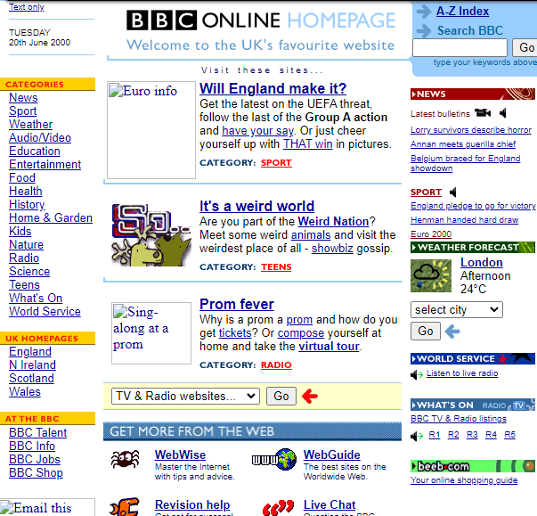
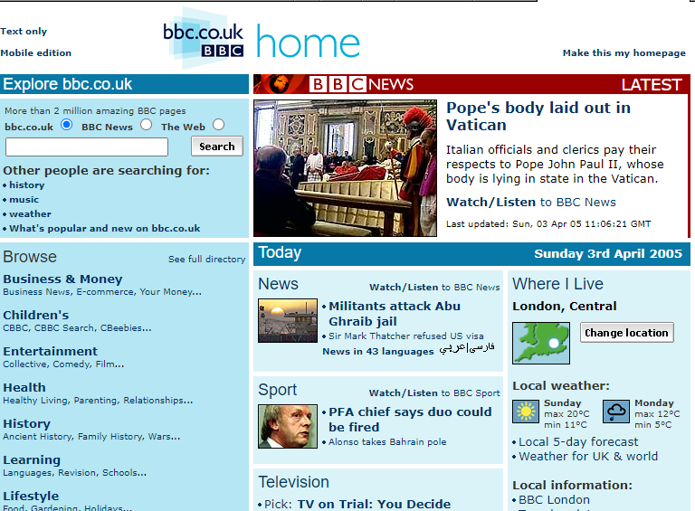
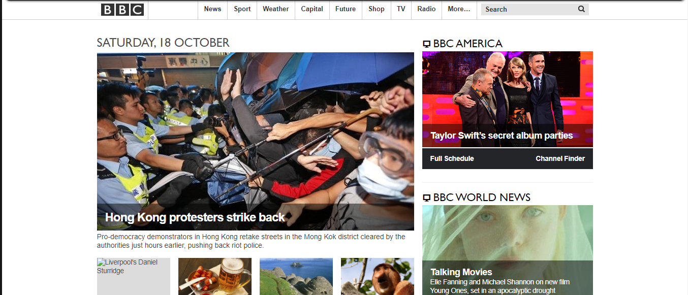
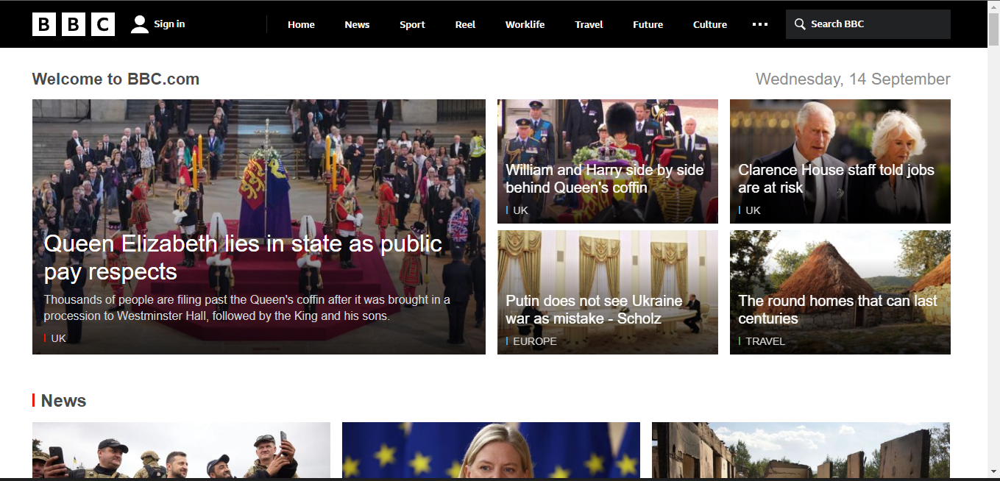

A British Broadcasting Corporation (Corporação Britânica de Radiodifusão, mais conhecida pela sigla BBC) é uma corporação pública de rádio e televisão do Reino Unido fundada em 1922. Possui uma boa reputação nacional e internacional (embora seja vista por alguns críticos como parcial e tendenciosa para o liberalismo e seja assumidamente pró-Londres)
O propósito do site mudou ao longo do tempo?
O propósito do site se manteve o mesmo, que é notícias em geral.
Qual era o o propósito inicial do site?
O propósito inicial do site foi mostrar notícias sobre tudo, desde educação até conflitos no mundo, política, etc.
Quais os problemas que esse site tinha quando "novo" e quais têm agora?
O site tinha muitos artigos com o mesmo tamanho, que traz uma experiência muito poluída para o usuário. Ao longo dos anos o site foi construindo uma visão mais estilizada e foi dando um destaque melhor para as notícias principais do dia. A barra de navegação do site continua até hoje apática e sem vida. Não é um site que traz uma experiência confortável devido as cores serem praticamente preto e branco.
Que melhorias você faria nesse site para que ele pudesse ser mais interessante para um público jovem, de periferia, que não está acostumado ao uso de Internet por computadores e não tem interesses por notícias.
Colocaria as notícias dentro de um slide em destaque e mudaria o visual do site que é preto e branco para uma cor mais chamativa. Destacaria mais os botões do menu de navegação e deixaria o site mais intuitivo com cores mais aconchegantes.
BBC 2000
BBC 2005
BBC 2014
BBC 2022
